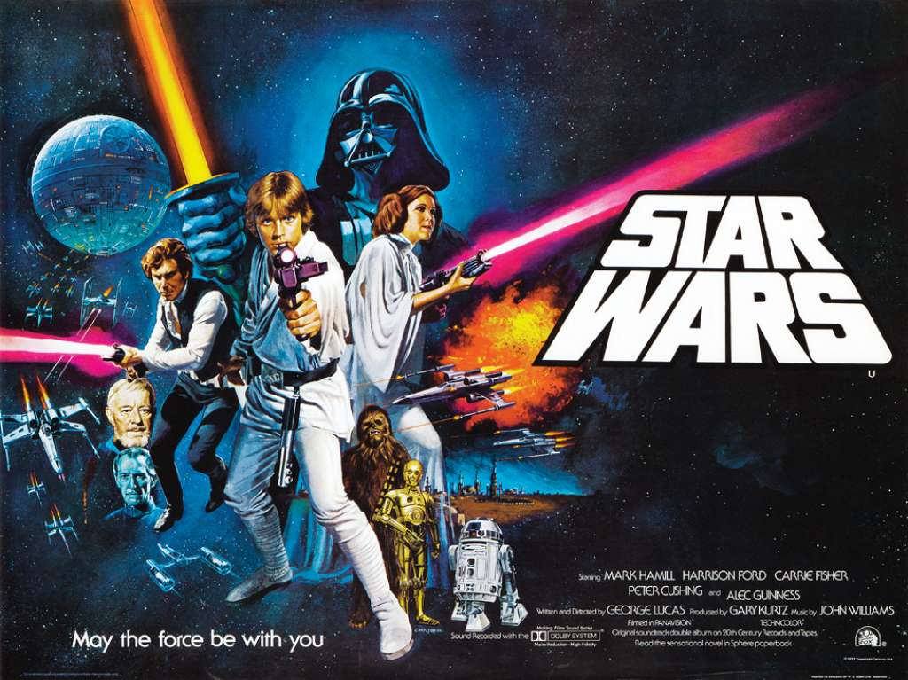
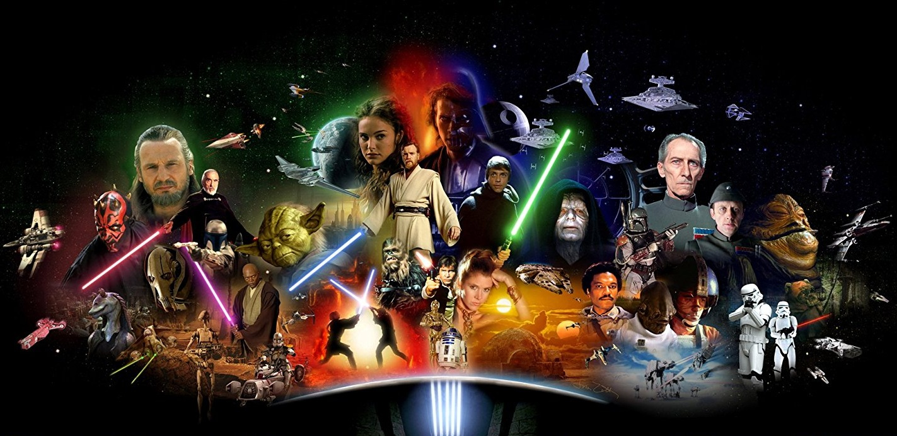

Star Wars (no Brasil, Guerra nas Estrelas e em Portugal, Guerra das Estrelas) é o título de uma franquia do tipo ópera espacial estadunidense criada pelo cineasta George Lucas. Que conta com uma série de oito filmes de fantasia científica e um spin-off. O primeiro foi lançado apenas com o título Star Wars em 25 de maio de 1977, e tornou-se um fenômeno mundial inesperado de cultura popular, sendo responsável pelo início da "era dos blockbusters": Super produções cinematográficas que fazem sucesso nas bilheterias e viram franquias com brinquedos, jogos, livros etc. Foi seguido por duas sequências, "Império Contra-Ataca" e "O Retorno do Jedi", lançadas em intervalos de três anos. Esta primeira trilogia seguia o trio icônico: Luke Skywalker, Princesa Leia e Han Solo, que lutava na Aliança Rebelde para derrubar o tirano Império Galáctico; paralelamente ocorre a jornada de Luke para se tornar um cavaleiro Jedi e a luta conta Darth Vader, um ex-jedi que sucumbiu ao Lado Sombrio da Força e ao Imperador.

